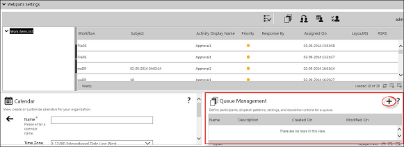
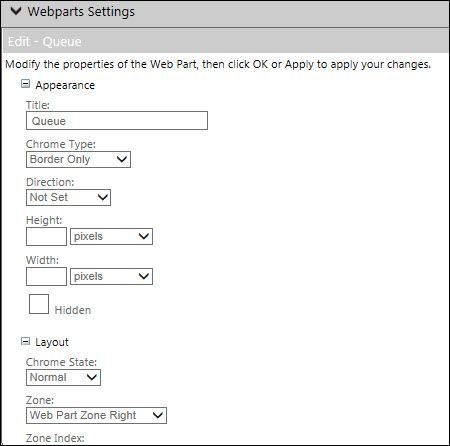

No
The Queue Management enables you to create and manage queues for allocating workflow activities. This is done using the Queue control.
Queue control consists of only Appearance and Layout properties. It does not comprise of any property grid.

The users can add a new queue by clicking the New Queue button.
The personalization scope for Queue Management remains the same as the Inbox and Calendar Web Part pages but the editing properties differ.

For more information, see Out-of-the-Box Web Parts page.